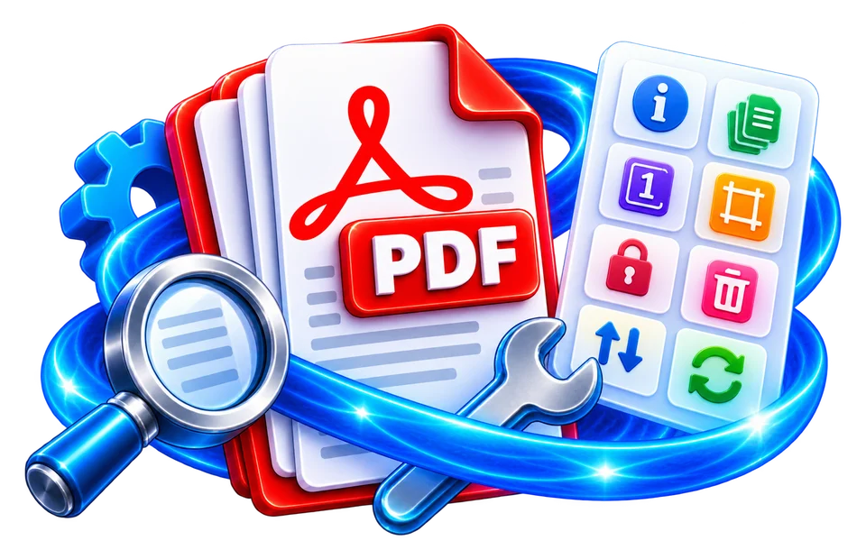

Open the PDF requiring metadata minimization
Export a copy after metadata removal and inspect its properties again before sharing.
Clear common metadata fields from a PDF.
Clearing common metadata fields can reduce incidental information but does not remove text or hidden objects inside document pages.

Export a copy after metadata removal and inspect its properties again before sharing.
Clear common document properties before sharing.
Check output; removal does not guarantee forensic anonymization.
Export a copy after metadata removal and inspect its properties again before sharing.
A shared presentation PDF might expose an internal username in its Author property. Clear such fields when sharing externally, then verify what remains.
Use the real tool above to verify the result. The example illustrates the workflow, not a guaranteed outcome.
A shared presentation PDF might expose an internal username in its Author property. Clear such fields when sharing externally, then verify what remains.
This step does not scrub comments, attachments, visible text, revision objects or document content. Use a separate careful review for sensitive information.

Clearing common metadata fields can reduce incidental information but does not remove text or hidden objects inside document pages.
Clearing common metadata fields can reduce incidental information but does not remove text or hidden objects inside document pages.
Export a copy after metadata removal and inspect its properties again before sharing.
A shared presentation PDF might expose an internal username in its Author property. Clear such fields when sharing externally, then verify what remains.
A PDF may include a title, author, subject, keywords, creator and modification history fields. A metadata-removal operation can clear some of these descriptive properties while preserving the visible pages. For example, a report copied from a template may show the template author's name even though the report itself is newly written. Clearing that stale field can reduce confusion when sharing the exported document. It does not establish a new author or prove that the file has no personal information remaining elsewhere.
PDFs can carry information in more than one place, including the Info dictionary, XMP packets, comments, annotations, attachments and visible text. A utility may remove the common document properties while leaving some of these other surfaces intact. Do not say that a PDF is anonymous merely because the properties panel appears blank. If privacy is the reason for removal, review attached files, hyperlinks, comments, signatures and page content separately and use specialist sanitization when required.
Removing metadata rewrites or modifies the document structure. Cryptographic signatures may become invalid because the signed bytes changed, even though pages still look identical. Do not alter an official signed original and then represent the derivative as unchanged. Preserve the signed version for authorized records and label the sanitized copy appropriately. A filesystem timestamp may also change during download; this is separate from any creation-date field stored inside the PDF. Editing one does not reliably erase the other.
For a practical test, make a copy of a non-sensitive PDF whose author field is known. Apply metadata removal, download the result and inspect its title and author with a separate viewer. Confirm page count and rendering remain intact. If the field persists, the engine may have altered a different metadata layer or the viewer may be caching the original. Reopen the new file by its actual path rather than the same browser tab or file handle.
If the PDF was created from scanned images, the visible pages may still show handwritten names or photographed location details. Metadata removal does not change those pixels. A PDF may also contain internal file attachments whose own metadata is unaffected. For privacy-critical publication, review the entire document with a systematic checklist and treat metadata stripping as one step, not a complete guarantee. Keep a clean original in restricted storage, and never assume the absence of common EXIF-style fields means no identifying traces exist.
Take a test PDF whose Properties panel displays a recognizable author and title. After metadata removal, reopen the downloaded copy and inspect both common document properties and any XMP metadata shown by a capable reader. A blank title in one application does not necessarily mean every metadata source was cleared. Next, search the visible pages and comments for the same name, because a utility that clears document properties will not erase text printed on the page. Finally, compare page count and signatures to the original. This procedure distinguishes a successful basic property edit from a complete privacy sanitization, which is a much broader task.
A PDF can include ordinary document properties plus embedded files, comments, form data, hidden layers and visible confidential text. Removing the Author or Producer field is not the same as sanitising every possible data channel. If sharing a sensitive document, inspect the document itself as well as its metadata and remove or redact content through an appropriate process. After exporting, reopen the output with a second viewer or metadata reader to check whether the targeted fields have disappeared. Maintaining the original is important when an auditable chain of custody matters, because metadata removal changes the file bytes.
No. Page content needs separate inspection and proper redaction.
No. Complete sanitization may require examining hidden objects, attachments, annotations and previous revisions beyond common properties.
No. The content, filenames, comments and other embedded structures may still contain identifying information.
Changing file bytes may invalidate signatures. Keep signed originals and evaluate requirements before editing.